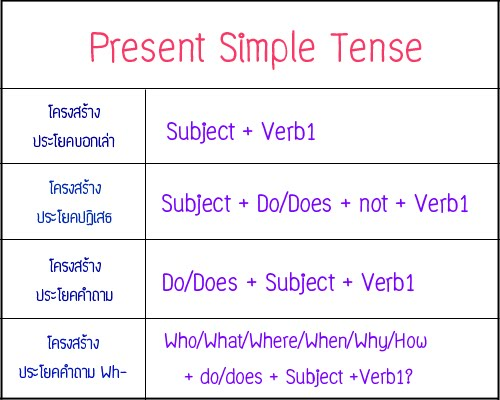

Present Simple Tense
Present Simple Tense ก็คือ ปัจจุบันกาลแบบเรียบง่าย เป็นเหตุการณ์หรือการกระทำที่เกิดขึ้นในปัจจุบัน

หลักการใช้ Present Simple Tense มีดังนี้ คือ
1.) ใช้กับเหตุการณ์หรือการกระทำที่เป็นความจริงหรือข้อเท็จจริงโดยทั่วๆไป หรือความจริงตามธรรมชาติ เช่น
She goes to work by bus. (เธอไปทำงานโดยรถประจำทาง)
I am an English teacher. (ฉันเป็นครูสอนภาษาอังกฤษ)
She is beautiful. (เธอสวย, เธอเป็นคนสวย)
My dogs eat Pedigree. (สุนัขของฉันกินเพดดิกรี)
The earth moves around the sun. (โลกหมุนรอบดวงอาทิตย์)
The sun sets in the west and rises in the east. (พระอาทิตย์ตกทางทิศตะวันตกและขึ้นทางทิศตะวันออก)
Water becomes ice at 0 degrees Celsius and boils at 100 degrees Celsius. (น้ำกลายเป็นน้ำแข็งที่ 0 องศาเซลเซียสและเดือดที่ 100 องศาเซลเชียส)
2.) ใช้กับเหตุการณ์ที่ทำเป็นประจำหรือเป็นกิจวัตร รวมถึงนิสัย
He watches television every night. (เขาดูโทรทัศน์ทุกคืน)
Students drink milk every day. (นักเรียนดื่มนมทุกวัน)
Jim always play guitar. (จิมเล่นกีร์ต้าเสมอๆ)
My father often drops me at school. (พ่อไปส่งฉันที่โรงเรียนบ่อยๆ)
หมายเหตุ
ถ้าประธานเป็นเอกพจน์ (He, She, It, Jane)
กริยาจะต้องเติม s, es หรือ ies โดยมีหลักดังนี้
คำกริยาทั่วๆไปเติม s เช่น drink-drinks, forget-forgets, steal-steals, take-takes
คำกริยาที่ลงท้ายด้วย o, s, x, z, ss, sh และ ch ให้เติม es เช่น go-goes, wash-washes, watch-watches, miss-misses
คำกริยาที่ลงท้ายด้วย y มี 2 กรณีคือ o ถ้าหน้า y เป็นพยัญชนะ ให้เปลี่ยน y เป็น i เติม es เช่น cry-cries, study-studies, try-tries, fly-flies o
ถ้าหน้า y เป็นสระ เติม s เช่น play-plays, buy-buys, enjoy-enjoys.